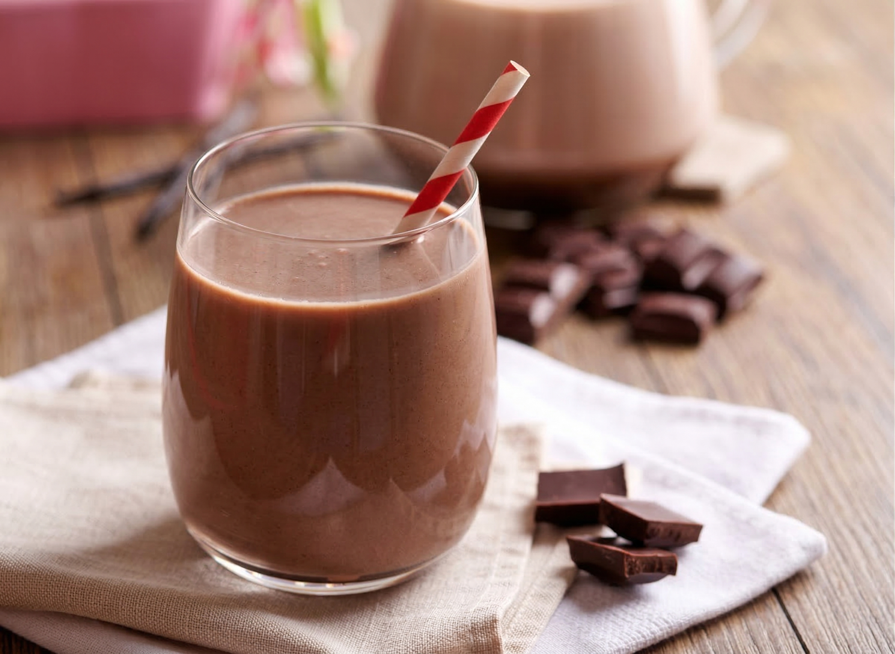

<!DOCTYPE html>
<html>

<head>
  <title>PET CT VAS Task</title>
  <script src="https://unpkg.com/jspsych@7.3.4"></script>
  <script src="https://unpkg.com/@jspsych/plugin-html-slider-response@1.1.3"></script>
  <script src="https://unpkg.com/@jspsych/plugin-html-button-response@1.1.3"></script>
  <script src="https://unpkg.com/@jspsych/plugin-html-keyboard-response@1.1.3"></script>
  <link href="https://unpkg.com/jspsych@7.3.4/css/jspsych.css" rel="stylesheet" type="text/css" />
  <style>
    /* 아이패드 제스처 및 텍스트 선택 방지 */
    html,
    body {
      width: 100%;
      height: 100%;
      margin: 0;
      padding: 0;
      overflow: hidden;
      /* 페이지 자체의 스크롤을 막아 새로고침 방지 */
      overscroll-behavior-y: none;
      -webkit-user-select: none;
      user-select: none;
      -webkit-touch-callout: none;
      touch-action: pan-x pan-y;
      /* 핀치 줌 방지 */
    }

    .jspsych-content {
      font-size: 55px;
      font-weight: bold;
      line-height: 1.5;
    }

    input[type=range] {
      height: 20px;
      width: 100%;
    }

    input[type=range]::-webkit-slider-thumb {
      width: 80px;
      height: 80px;
      border-radius: 50%;
      background: #007bff;
      cursor: pointer;
      -webkit-appearance: none;
      margin-top: -30px;
    }

    .jspsych-html-slider-response-container {
      width: 520px !important;
      margin: auto;
    }

    .slider-label {
      position: absolute;
      top: -55px;
      width: 400px;
      font-size: 45px;
      font-weight: bold;
      line-height: 1.3;
    }

    .slider-label-left {
      right: 50%;
      margin-right: 40px;
      text-align: right;
    }

    .slider-label-right {
      left: 50%;
      margin-left: 40px;
      text-align: left;
    }

    .slider-subtext {
      font-size: 35px;
      font-weight: normal;
    }

    .jspsych-btn {
      font-size: 40px;
      font-weight: bold;
      padding: 20px 45px;
      margin-top: 50px;
      border-radius: 15px;
    }

    /* 연구자 전용 대기 화면 버튼 스타일 */
    .researcher-btn {
      font-size: 30px;
      padding: 20px 40px;
      background-color: #6c757d;
      color: white;
      border: none;
      border-radius: 8px;
      opacity: 0.3;
      /* 눈에 덜 띄게 흐리게 처리 */
      position: relative;
      overflow: hidden;
      cursor: pointer;
      user-select: none;
      -webkit-user-select: none;
      touch-action: none;
      /* prevent default touch actions like scroll */
    }

    /* 진행률 바를 나타내는 가상 요소 */
    .researcher-btn::before {
      content: '';
      position: absolute;
      top: 0;
      left: 0;
      bottom: 0;
      width: 0%;
      background-color: #28a745;
      /* 초록색 */
      z-index: 1;
      /* 글자 뒤에 오도록 */
      transition: width 0s linear;
      /* 기본적으로는 애니메이션 없음 (js에서 제어) */
    }

    /* 버튼 안의 텍스트가 바 위에 보이도록 z-index 설정 */
    .researcher-btn span {
      position: relative;
      z-index: 2;
    }

    .highlight {
      color: #d9534f;
    }

    /* 큐 프라이밍 이미지 스타일 */
    .cue-image {
      width: 500px;
      height: auto;
      border-radius: 15px;
      margin-top: 20px;
      margin-bottom: 20px;
      box-shadow: 0px 4px 10px rgba(0, 0, 0, 0.1);
    }
  </style>
</head>

<body></body>
<script src="https://unpkg.com/@jspsych/plugin-survey-html-form@1.0.3"></script>
<script>
  // 아이패드 당기기 새로고침(Pull-to-refresh) 및 화면 흔들림 완벽 방지
  document.addEventListener('touchmove', function (e) {
    // 슬라이더 바 조작이나, 텍스트 입력 칸 터치 시에는 기본 동작 허용
    if (e.target.tagName === 'INPUT' || e.target.tagName === 'TEXTAREA') {
      return;
    }
    // 그 외 영역에서의 모든 제스처 무시
    e.preventDefault();
  }, { passive: false });

  const jsPsych = initJsPsych({
    on_finish: function () {
      // 시작 시 입력받은 피험자 정보 추출
      const surveyData = jsPsych.data.get().filter({ task: 'participant_info' }).values()[0].response;
      const participantId = surveyData.participant_id;
      const sessionType = surveyData.session_type;

      // 현재 시간을 yyyy-mm-dd hh:mm:ss 형태로 저장 (타임스탬프)
      const now = new Date();
      const timestamp = now.getFullYear() + '-' +
        String(now.getMonth() + 1).padStart(2, '0') + '-' +
        String(now.getDate()).padStart(2, '0') + ' ' +
        String(now.getHours()).padStart(2, '0') + ':' +
        String(now.getMinutes()).padStart(2, '0') + ':' +
        String(now.getSeconds()).padStart(2, '0');

      // 1. 필요한 데이터만 필터링 (phase가 있는 경우만 유효한 측정 데이터로 간주)
      // jsPsych의 DataCollection 객체를 일반 배열로 변환하기 위해 .values() 사용
      const rawData = jsPsych.data.get().filterCustom(function (trial) {
        return trial.phase !== undefined;
      }).values();

      // 2. 보고서에 넣을 형태로 가공 (reaction time 등 불필요한 정보 제거)
      const filteredData = rawData.map(function (trial) {
        // cue 프라이밍 시에는 question이 없고 task만 있으므로 처리
        const measureType = trial.question ? trial.question : trial.task;

        return {
          id: participantId,
          session: sessionType,
          phase: trial.phase,
          measure: measureType,
          response: trial.response,
          timestamp: timestamp
        };
      });

      // 3. 가공된 데이터를 CSV 형식 문자열로 변환 (헤더에 컬럼 추가)
      let csvData = "id,session,phase,measure,response,timestamp\n";
      filteredData.forEach(function (row) {
        csvData += `"${row.id}","${row.session}","${row.phase}","${row.measure}","${row.response}","${row.timestamp}"\n`;
      });

      const googleSheetUrl = 'https://script.google.com/macros/s/AKfycbzVyqXLhMR9hdEOwqFSDNRkRjT2aZqdf3EP0E2em1Qt_KSKQTGuEy6hTm7F5dPjhhGZ/exec';

      fetch(googleSheetUrl, {
        method: 'POST',
        headers: { 'Content-Type': 'text/plain;charset=utf-8' },
        body: csvData
      })
        .then(response => {
          document.body.innerHTML = '<p style="font-size:40px; text-align:center; margin-top:20%; color:#28a745;">데이터 전송 완료<br>모든 측정이 종료되었습니다.</p>';
        })
        .catch(error => {
          document.body.innerHTML = '<p style="font-size:40px; text-align:center; margin-top:20%; color:#dc3545;">데이터 전송 실패<br>오프라인 상태인지 확인하세요.</p>';
        });
    }
  });

  const timeline = [];

  // 실험 시작 전 정보 입력 화면 (ID 및 Pre/Post)
  const info_screen = {
    type: jsPsychSurveyHtmlForm,
    preamble: '<h1>피험자 정보를 입력하세요</h1>',
    html: `
      <div style="text-align: left; margin: auto; width: 500px; font-size: 35px; line-height: 2;">
        <label for="participant_id">피험자 ID:</label><br>
        <input type="text" id="participant_id" name="participant_id" required style="font-size: 35px; padding: 10px; width: 100%; margin-bottom: 30px;"><br>
        
        <label>세션 구분:</label><br>
        <input type="radio" id="pre" name="session_type" value="Pre" required>
        <label for="pre">Pre</label><br>
        <input type="radio" id="post" name="session_type" value="Post" required>
        <label for="post">Post</label>
      </div>
    `,
    button_label: '설문 시작하기',
    data: { task: 'participant_info' }
  };
  timeline.push(info_screen);

  // 전체 스케줄 정의 (10분~90분)
  const schedule = [
    { time: "10분", type: "q" }, { time: "20분", type: "q" },
    { time: "30분", type: "q" }, { time: "40분", type: "q" },
    { time: "49분", type: "q" },
    { time: "50분", type: "cue", skipWait: true },
    { time: "51분 (음료 섭식 직후)", type: "q" },
    { time: "54분", type: "q" }, { time: "57분", type: "q" },
    { time: "60분 (섭식 종료)", type: "q" },
    { time: "65분", type: "q" }, { time: "70분", type: "q" },
    { time: "75분", type: "q" }, { time: "80분", type: "q" },
    { time: "85분", type: "q" }, { time: "90분", type: "q" }
  ];

  schedule.forEach(function (item) {

    if (!item.skipWait) {
      // 연구자가 타이밍에 맞춰 누르는 대기 화면 (2초 길게 누르기)
      const wait_screen = {
        type: jsPsychHtmlKeyboardResponse, // buttonResponse 대신 keyboardResponse 사용 (직접 제어하기 위함)
        stimulus: `
          <p style="font-size: 45px; color: #888; font-weight: normal;">다음 측정 대기 중...</p>
          <p style="font-size: 65px; font-weight: bold; margin-top: 20px; margin-bottom: 60px;">${item.time} 측정</p>
          <button id="long-press-btn" class="researcher-btn" style="padding: 20px 50px; font-size: 40px; font-weight: bold;"><span>시작</span></button>
        `,
        choices: "NO_KEYS", // 키보드 응답 비활성화
        on_load: function () {
          const btn = document.getElementById('long-press-btn');
          let pressTimer;
          let isPressing = false;
          const requiredTime = 1000; // 1초

          function startPress(e) {
            if (e.type === 'touchstart') e.preventDefault(); // 기본 터치 동작 방지
            if (isPressing) return;
            isPressing = true;

            // CSS transition을 2초로 설정하여 진행률 바 애니메이션 시작
            btn.style.setProperty('--btn-before-transition', `width ${requiredTime}ms linear`);
            btn.style.setProperty('outline', 'none');

            // 약간의 딜레이를 주어 transition이 적용된 후 width를 변경하도록 함
            requestAnimationFrame(() => {
              const beforeStyle = document.createElement('style');
              beforeStyle.id = 'dynamic-progress-style';
              beforeStyle.innerHTML = `
                .researcher-btn::before {
                  transition: width ${requiredTime}ms linear !important;
                  width: 100% !important;
                }
              `;
              document.head.appendChild(beforeStyle);
            });

            pressTimer = setTimeout(() => {
              // 2초 도달 시 jsPsych 다음 단계로 진행
              jsPsych.finishTrial();
            }, requiredTime);
          }

          function endPress(e) {
            if (e && e.type === 'touchend') e.preventDefault();
            isPressing = false;
            clearTimeout(pressTimer);

            // 스타일 제거하여 진행률 바 초기화
            const dynamicStyle = document.getElementById('dynamic-progress-style');
            if (dynamicStyle) {
              dynamicStyle.remove();
            }
          }

          // 터치 및 마우스 이벤트 리스너 추가
          btn.addEventListener('mousedown', startPress);
          btn.addEventListener('touchstart', startPress, { passive: false });

          btn.addEventListener('mouseup', endPress);
          btn.addEventListener('mouseleave', endPress);
          btn.addEventListener('touchend', endPress);
          btn.addEventListener('touchcancel', endPress);
        }
      };
      timeline.push(wait_screen);
    }

    if (item.type === "cue") {
      // 50분 큐 프라이밍 화면 (시각적 자극 포함)
      const cue_trial = {
        type: jsPsychHtmlButtonResponse,
        stimulus: `
            <p class="highlight">Cue priming</p>
            <p>1분 후에 맛있는 ‘초코우유’를 먹는다고 상상해보세요.</p>
            
          `,
        choices: ['다음'],
        button_html: '<button class="jspsych-btn">%choice%</button>',
        data: { phase: item.time, task: "cue_priming" }
      };
      timeline.push(cue_trial);
    } else {
      // Liking 문항 텍스트 동적 설정
      let liking_stimulus = "지금 초코 우유를 마신다면, 맛이 얼마나 좋을 것으로 예상하나요?";
      let liking_label_left = "(전혀 안 좋을 것이다)";
      let liking_label_right = "(매우 좋을 것이다)";

      if (["51분 (음료 섭식 직후)", "54분", "57분", "60분 (섭식 종료)"].includes(item.time)) {
        liking_stimulus = "방금 마신 초코우유가 얼마나 맛있었나요?";
        liking_label_left = "(전혀 맛이 없었다)";
        liking_label_right = "(매우 맛있었다)";
      }

      // Liking 문항 (0-100 척도)
      const liking_trial = {
        type: jsPsychHtmlSliderResponse,
        stimulus: `<p style="margin-bottom: 80px;">${liking_stimulus}</p>`,
        labels: [
          `<div class="slider-label slider-label-left">0<br><span class="slider-subtext">${liking_label_left}</span></div>`,
          `<div class="slider-label slider-label-right">100<br><span class="slider-subtext">${liking_label_right}</span></div>`
        ],
        min: 0,
        max: 100,
        start: 50,
        step: 1,
        slider_width: 520,
        button_label: '제출 및 다음',
        require_movement: true,
        data: { phase: item.time, question: "Liking" }
      };
      timeline.push(liking_trial);

      // Wanting 문항 텍스트 동적 설정
      let wanting_stimulus = "지금 ‘초코우유’를 얼마나 마시고 싶은가요?";
      
      if (["51분 (음료 섭식 직후)", "54분", "57분", "60분 (섭식 종료)"].includes(item.time)) {
        wanting_stimulus = "지금 ‘초코우유’를 얼마나 더 마시고 싶은가요?";
      }

      // Wanting 문항 (0-100 척도)
      const wanting_trial = {
        type: jsPsychHtmlSliderResponse,
        stimulus: `<p style="margin-bottom: 80px;">${wanting_stimulus}</p>`,
        labels: [
          '<div class="slider-label slider-label-left">0<br><span class="slider-subtext">(전혀 마시고 싶지 않다)</span></div>',
          '<div class="slider-label slider-label-right">100<br><span class="slider-subtext">(매우 마시고 싶다)</span></div>'
        ],
        min: 0,
        max: 100,
        start: 50,
        step: 1,
        slider_width: 520,
        button_label: '제출 및 다음',
        require_movement: true,
        data: { phase: item.time, question: "Wanting" }
      };
      timeline.push(wanting_trial);
    }
  });

  jsPsych.run(timeline);
</script>

</html>
